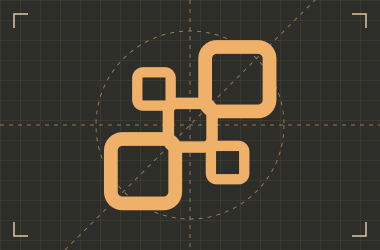

Documentazione per sviluppatori
Manuale di
architettura.
Progetta, revisiona e costruisci funzionalità complesse con Codex. Parti dalle decisioni che danno forma al sistema.

Parti da un caso d’uso
Coda di lavoro recuperabileUn worker si ferma dopo un effetto persistente. Chi assegna la chiave di idempotenza e quando può scadere?↗Accessi per tenantUn operatore lavora su due account. Quale tenant gli concede l’accesso e chi può revocarlo?↗Acquisizione di eventi versionatiUn dispositivo offline invia eventi vecchi dopo un aggiornamento. Quali versioni deve accettare il ricevitore?↗